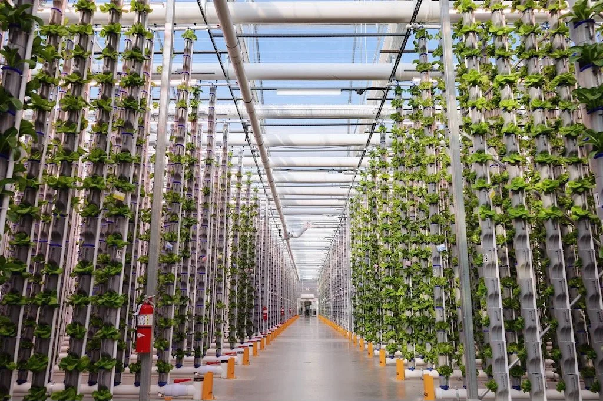
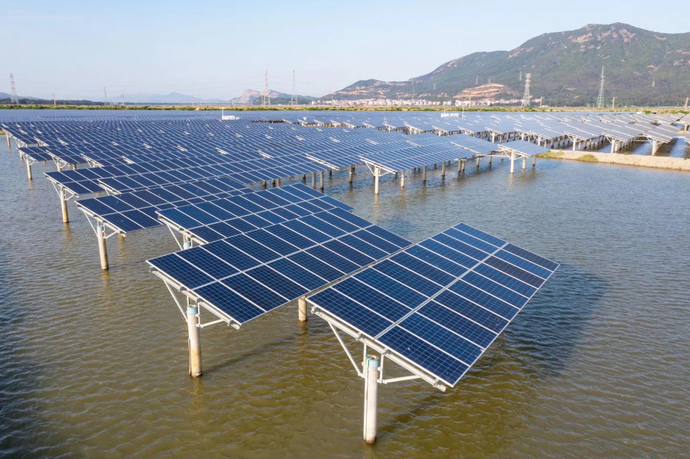
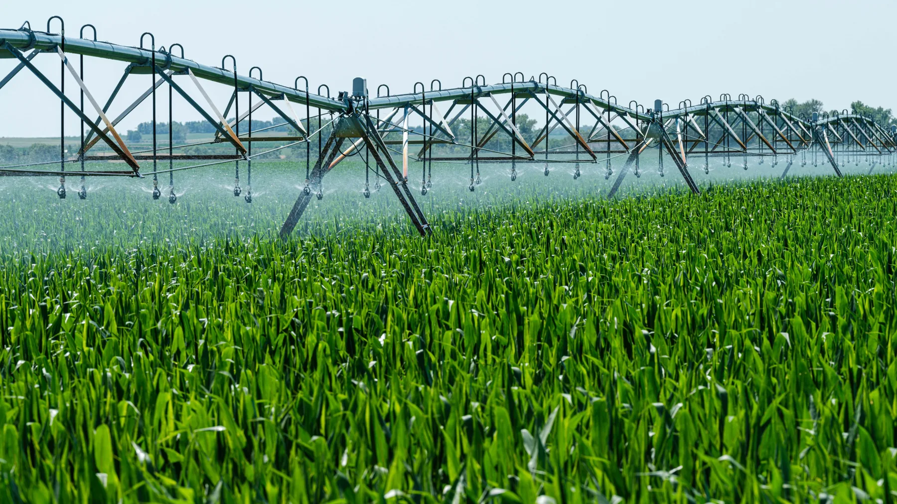
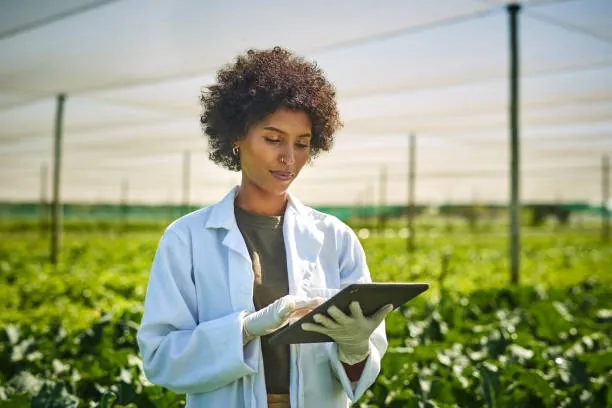
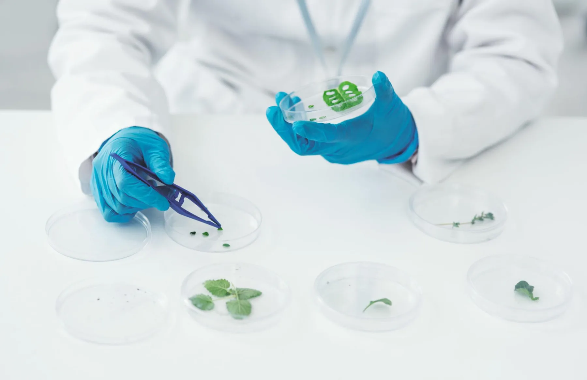
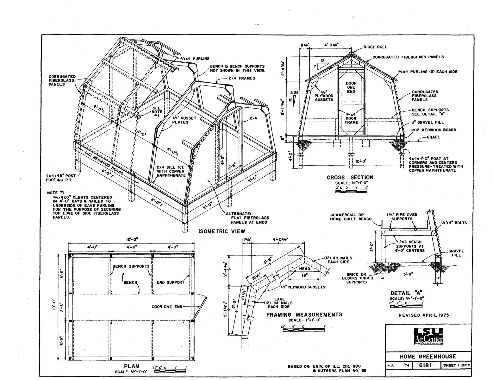

Curiosity in cultivation
Our Technology
A visual exploration of growing systems, renewable energy, and agricultural research. These are concept themes, not claims about a real farm's operations.
Growing with intention
Controlled growing spaces can help farmers manage conditions around crops. This concept imagines technology as a practical partner to people who grow food.

A different energy mix
Natural Energy
Renewable energy offers a direction for thinking about the power required to grow and distribute food. The visual story pairs large solar installations with the rhythms of a working farm.



Observe and improve
Genetics
Plant research can inform how crops respond to changing conditions. Foxtail's concept frames this work through observation, care, and questions about what farmers may need next.
Behind the process
Research
From seedlings to lab work, the design explores the link between experimentation and everyday food. The images are illustrative; no scientific program is being represented here.

Original design reference
Patent drawing
The source frame includes a technical illustration as a visual motif. It is shown here as design reference only and does not imply ownership or an active patent.
